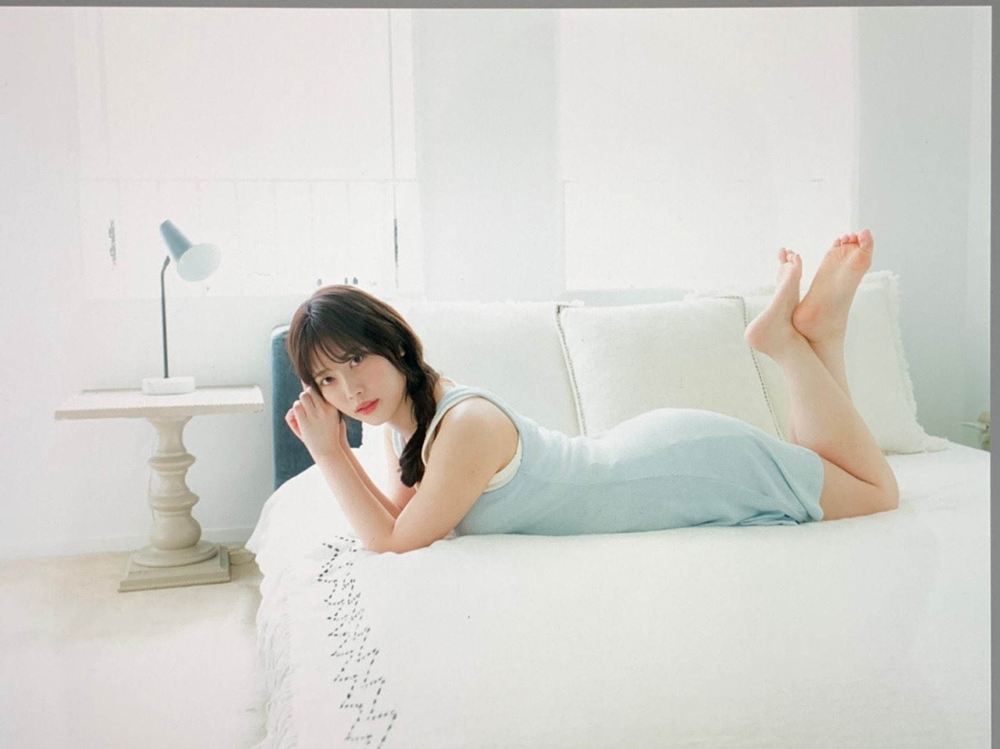
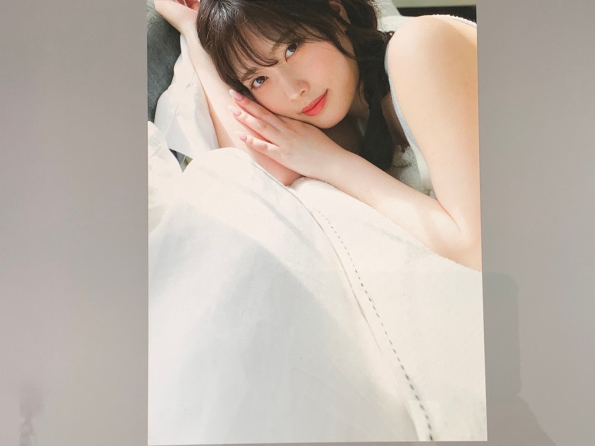
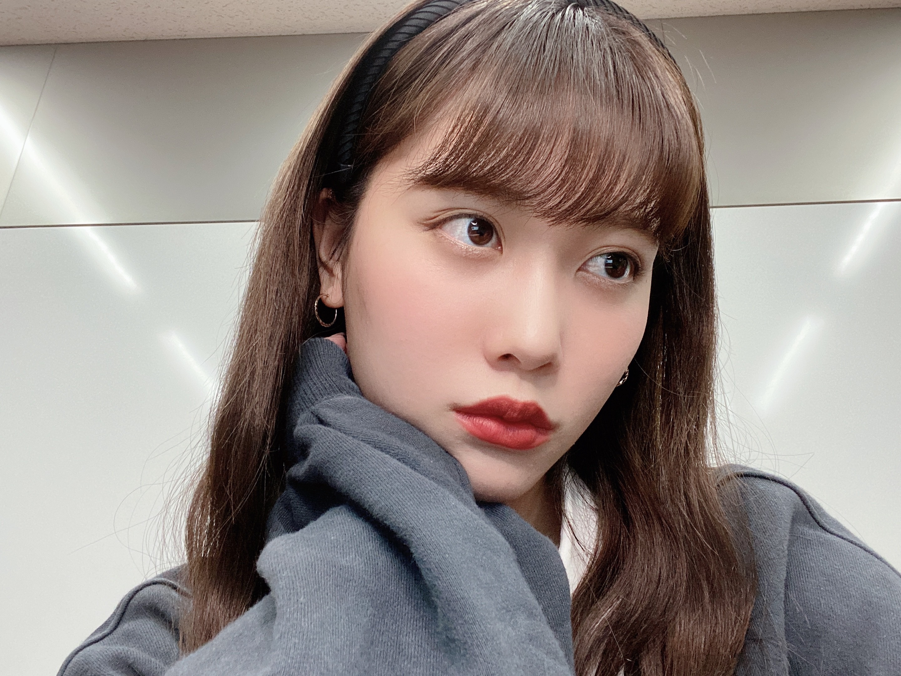
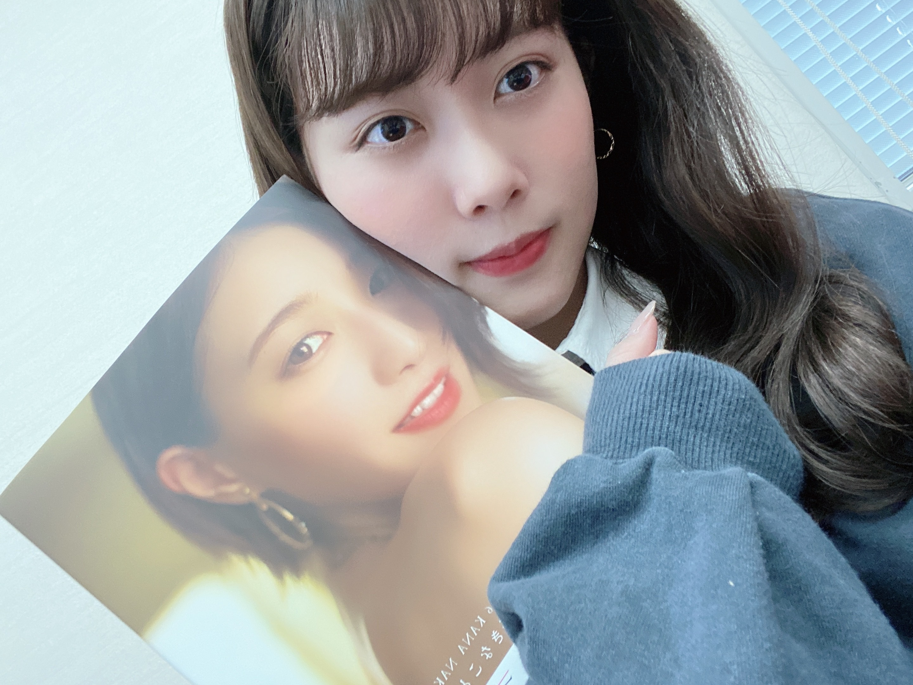

2020/1025Sunだいすきだよーー
こんばんは！
伊藤純奈です

アップトゥボーイ
発売中です☺︎
とってもとっても楽しい
撮影でした〜！！アップトゥボーイの
撮影はなんと4年ぶりでした！！びっくりだ！
カメラマンさんが2期生の初グラビアを
撮ってくださった方だったのでリラックス
して撮影できました☺︎Takeoさんありがとう
ございました！！
みんなたくさんゲットしてね〜

なんか同じ方向向いてる写真
ばっかりだった。(笑)
ここ最近は毎週ミーグリが
あってたのしいです☺︎
また日程が追加されたので
みんな来るべきだと思う☺︎(笑)


お待ちしております

かなちゃんの写真集を
もらいました〜〜
なんとサインとメッセージも
貰ってしまいましたうれしい。
家宝にします。
ほんとに素敵な写真集でみてて
思わずかわいい〜って声に出してしまう
そんな写真集です。みなさまぜひ！
そして本日がかなちゃんの
乃木坂46としての最後の日でした。
なんか実感が湧かなすぎてまた
次の日とかに楽屋にいない...って
悲しくなるんだろうなあ。
ふと、
この前のバスラでかなちゃん真夏ちゃんで
歌ってた「人生を考えたくなる」を
急に思い出してあ〜〜泣けたなあ〜
と懐かしい気持ちになりました。
誰からも好かれてて信頼されている
かなちゃん。卒業は寂しいけど
これからも頑張ってください☺︎
本当に本当に
お疲れ様でした！！
これからもだいすきだよ。
卒業してもぜったい会おうね〜！
そして
28日は白石さんの
卒業ライブです。
その前に27日の20時〜
abemaで特番があります！
白石タクシー
乗車してるのでぜひ☺︎
大好きな先輩の卒業を
見送るのは何回経験しても
悲しいものです。
みーんなだいすきだよーーーー
2020/10/25 19:40
コメント(192)
ポニテ可愛すぎやん
反則だよ
反則だよ
ミーグリお疲れ様！
純奈ブログ更新お疲れ様です。
アップトウボーイ買いました。グラビアも多く嬉しい限りです。中々会う機会が少ないので沢山のグラビアは大変嬉しいです。27日のAbemaも楽しみです。
まずは久々のブログが大変嬉しいです。
また、書きますね。体調に気を付けて頑張ってね。
アップトウボーイ買いました。グラビアも多く嬉しい限りです。中々会う機会が少ないので沢山のグラビアは大変嬉しいです。27日のAbemaも楽しみです。
まずは久々のブログが大変嬉しいです。
また、書きますね。体調に気を付けて頑張ってね。
じゅんなちゃんブログ更新ありがとう♡
ミーグリでも言ったけど、アップトゥボーイ読んだよ〜(๑o̴̶̷᷄﹏o̴̶̷̥᷅๑)かわいくて素敵で何回も何回も読み直しちゃった！笑 いろんな表情のじゅんなちゃんがみれて幸せだ〜(><)ミーグリもまた追加するね！♡
かなちゃんの写真集、買ってないんだけど、じゅんなちゃんが出たトップ目で｢セクシーにしたい｣って言ってたからきっと素敵なんだろうな〜って思う！表紙がすでにセクシーでかなりんらしいな〜って思います！
来週は白石麻衣ちゃんの卒コンだね、、、、大好きな人がいきなりいなくなるのは寂しいよね(T_T)(T_T)じゅんなちゃんが優しくてメンバー思いなこと、たくさん伝わるよ！そんなじゅんなちゃんがゆりは大好きだ〜！！！思い出に残る最高のライブになりますように！じゅんなちゃんだいすきだ〜！！！！
ミーグリでも言ったけど、アップトゥボーイ読んだよ〜(๑o̴̶̷᷄﹏o̴̶̷̥᷅๑)かわいくて素敵で何回も何回も読み直しちゃった！笑 いろんな表情のじゅんなちゃんがみれて幸せだ〜(><)ミーグリもまた追加するね！♡
かなちゃんの写真集、買ってないんだけど、じゅんなちゃんが出たトップ目で｢セクシーにしたい｣って言ってたからきっと素敵なんだろうな〜って思う！表紙がすでにセクシーでかなりんらしいな〜って思います！
来週は白石麻衣ちゃんの卒コンだね、、、、大好きな人がいきなりいなくなるのは寂しいよね(T_T)(T_T)じゅんなちゃんが優しくてメンバー思いなこと、たくさん伝わるよ！そんなじゅんなちゃんがゆりは大好きだ〜！！！思い出に残る最高のライブになりますように！じゅんなちゃんだいすきだ〜！！！！
じゅんなちゃん更新ありがとう❤︎
ポニーテールのじゅんなちゃん、久保ちゃんに見えた！！
かなちゃんも今日で最後。
まいやんも水曜日でラスト。
寂しいよね、、
でもファンとして笑顔で見送りたいな！
じゅんなちゃん大好きだよーーー❤︎❤︎❤︎❤︎
ポニーテールのじゅんなちゃん、久保ちゃんに見えた！！
かなちゃんも今日で最後。
まいやんも水曜日でラスト。
寂しいよね、、
でもファンとして笑顔で見送りたいな！
じゅんなちゃん大好きだよーーー❤︎❤︎❤︎❤︎
じゅんなちゃんブログ更新ありがとうございます！
ミーグリ、仕事があって来れなかったですけど、今度来れるように頑張りますので待っててくださーい
僕もじゅんなちゃんがだいすきですよーー！
次のブログも楽しみにしてます！
じゃあねばいばーーい
しんご
ミーグリ、仕事があって来れなかったですけど、今度来れるように頑張りますので待っててくださーい
僕もじゅんなちゃんがだいすきですよーー！
次のブログも楽しみにしてます！
じゃあねばいばーーい
しんご
ブログ更新ありがとうございます！
アップトゥボーイ買いたい買いたいけどお金がぁぁぁぁ｡･(つд`｡)･｡
花奈さん卒業私もって言うか私の方が全然実感湧きません(o；д；)oこれからの花奈さんの道も応援したいですね！
純ちゃんかわいすぎます…気付いたら片想い…笑笑
女の子なのに男の子に全然興味無いんです…乃木坂さんが大好き過ぎて…純ちゃんかわいいし性格イケメンだし本当に大好きです ♥️❤️
うぅ…好き過ぎて辛い
これからも応援してます！！
純ちゃん大好きぃぃぃぃぃぃ！！！
はづきより
アップトゥボーイ買いたい買いたいけどお金がぁぁぁぁ｡･(つд`｡)･｡
花奈さん卒業私もって言うか私の方が全然実感湧きません(o；д；)oこれからの花奈さんの道も応援したいですね！
純ちゃんかわいすぎます…気付いたら片想い…笑笑
女の子なのに男の子に全然興味無いんです…乃木坂さんが大好き過ぎて…純ちゃんかわいいし性格イケメンだし本当に大好きです ♥️❤️
うぅ…好き過ぎて辛い
これからも応援してます！！
純ちゃん大好きぃぃぃぃぃぃ！！！
はづきより
さみしいね
純奈ちゃん、こんばんは
ポニーテールが何だか新鮮
シークレットグラフィティーのイメージだわ
純奈ちゃんは何故か不等号のイメージなんやけど、ポニーテールはシークレットグラフィティーのイメージだわ
ミーグリ、来週の日曜日、宜しくお願いします
かなりんの写真集、凄くいいね
スタイル良すぎて、全てのラインが芸術です
買ってよかったって思える1冊でした
サインとメッセージ、メンバーならではで良いね
大切にしてね
じゃぁ、来週のミーグリでね
またね～
ポニーテールが何だか新鮮
シークレットグラフィティーのイメージだわ
純奈ちゃんは何故か不等号のイメージなんやけど、ポニーテールはシークレットグラフィティーのイメージだわ
ミーグリ、来週の日曜日、宜しくお願いします
かなりんの写真集、凄くいいね
スタイル良すぎて、全てのラインが芸術です
買ってよかったって思える1冊でした
サインとメッセージ、メンバーならではで良いね
大切にしてね
じゃぁ、来週のミーグリでね
またね～
ブログ更新ありがとう！
アップトゥボーイ見たよ〜
どれも可愛くて幸せな気持ちになったよ(*^^*)
画面越しだけど毎週純奈ちゃんとお話できるの嬉しい〜
残りのミーグリもよろしくお願いします！♡
純奈ちゃんだいすき♡♡
アップトゥボーイ見たよ〜
どれも可愛くて幸せな気持ちになったよ(*^^*)
画面越しだけど毎週純奈ちゃんとお話できるの嬉しい〜
残りのミーグリもよろしくお願いします！♡
純奈ちゃんだいすき♡♡
まだまだ余談の許さないコロナ渦、インフルエンザも流行り始める頃ですが、いかがお過ごしですか？
ご活躍を目にする事が出来て、嬉しい限りです。
麻衣さんと花奈さんが卒業されてより世代交代が色濃くなりますね。寂しいけれど、純奈さんには躍進して貰いたいですね。
あんまり悲しがっていると、
"＃純奈かわいそう"って言われちゃいますよ(笑)
これからもご活躍を願っています。
どうぞ、ご自愛ください。
ご活躍を目にする事が出来て、嬉しい限りです。
麻衣さんと花奈さんが卒業されてより世代交代が色濃くなりますね。寂しいけれど、純奈さんには躍進して貰いたいですね。
あんまり悲しがっていると、
"＃純奈かわいそう"って言われちゃいますよ(笑)
これからもご活躍を願っています。
どうぞ、ご自愛ください。
純奈ちゃん、ブログありがとう！
そして今日のミーグリもありがとうね！
めちゃくちゃ楽しかったです！！
先々週と、今日、純奈ちゃんとお話しできて本当に嬉しかったです。
やっとオリエントの話ができましたw
ほんとにほんとに良かったです！純奈ちゃんの演技が本当に大好きなので、また世間が落ち着いたら純奈ちゃんの舞台観に行けたらなぁと思ってます。
25枚目は24枚目の時の振替があったので、それ込みの買い方をしてしまいまして、、、。
24枚目の振替券は今回使えないようなので失敗したなぁと。
もっとお話ししたかったです、、、！
その分の15枚は直接お会いできる時を楽しみにしております。その時はよろしくお願い致します。
あとは今日話そびれてしまいましたが、UTBめちゃくちゃ良かったです！
やっぱり純奈ちゃんは美しいなと。
最高でした！！！
今日はほんとにありがとうございました。
これからもずっと応援してます！
ひろき
そして今日のミーグリもありがとうね！
めちゃくちゃ楽しかったです！！
先々週と、今日、純奈ちゃんとお話しできて本当に嬉しかったです。
やっとオリエントの話ができましたw
ほんとにほんとに良かったです！純奈ちゃんの演技が本当に大好きなので、また世間が落ち着いたら純奈ちゃんの舞台観に行けたらなぁと思ってます。
25枚目は24枚目の時の振替があったので、それ込みの買い方をしてしまいまして、、、。
24枚目の振替券は今回使えないようなので失敗したなぁと。
もっとお話ししたかったです、、、！
その分の15枚は直接お会いできる時を楽しみにしております。その時はよろしくお願い致します。
あとは今日話そびれてしまいましたが、UTBめちゃくちゃ良かったです！
やっぱり純奈ちゃんは美しいなと。
最高でした！！！
今日はほんとにありがとうございました。
これからもずっと応援してます！
ひろき
純奈お疲れ様( ´ ꒳ ` )ﾉ
雑誌見たよ！
やっぱり純奈の写真素敵です。
良過ぎて何処から話していいのから分からないけど、本当に最高だったよ！
可愛い、素敵、綺麗、やっぱり純奈は最高です。
絢音ちゃんも写真集出すから、純奈も写真集とかあったら嬉しいですね。
今はコロナ期だから海外へは行けないけど、純奈なら絶対出せると思うよ。
純奈は写真も映えるから大丈夫。
という事で明日も一緒に頑張っていきましょうね。
純奈の755毎回楽しく見てるよ。
いつか純奈にコメ返される日を夢見ていますね。
今回はミーグリは純奈の分を用意していなかったのが残念です。
次のシングルでは純奈の所へ頑張って行きます。
雑誌見たよ！
やっぱり純奈の写真素敵です。
良過ぎて何処から話していいのから分からないけど、本当に最高だったよ！
可愛い、素敵、綺麗、やっぱり純奈は最高です。
絢音ちゃんも写真集出すから、純奈も写真集とかあったら嬉しいですね。
今はコロナ期だから海外へは行けないけど、純奈なら絶対出せると思うよ。
純奈は写真も映えるから大丈夫。
という事で明日も一緒に頑張っていきましょうね。
純奈の755毎回楽しく見てるよ。
いつか純奈にコメ返される日を夢見ていますね。
今回はミーグリは純奈の分を用意していなかったのが残念です。
次のシングルでは純奈の所へ頑張って行きます。
アップトゥボーイ買ったよ～！！！！めちゃめちゃ可愛かった～！！！！！！！ポニーテール純ちゃんも可愛い！！！携帯壊れちゃって今携帯ないからミーグリ応募できなくてめっちゃ悔しい…早くお話ししたいです 麻衣ちゃん卒コンは最後だけ見れそうなので見ます…！頑張ってください！！
純奈ちゃん、こんばんは。
グラビア最高です！！
どんどん綺麗で可愛くなってくね
ホントにやばいよ！！
花奈ちゃんの写真集も最高やったね。
パーフェクトボディでした
メンバーを見送るのは、いつまでたっても辛いよね。
でも、不思議と乃木坂はずっと繋がって行くんやろうなって思うから、前向いてくよ。
白石タクシーめっちゃ楽しみ。まいやんと純奈ちゃんの絡みをずっと見たかったから！！
グラビア最高です！！
どんどん綺麗で可愛くなってくね
ホントにやばいよ！！
花奈ちゃんの写真集も最高やったね。
パーフェクトボディでした
メンバーを見送るのは、いつまでたっても辛いよね。
でも、不思議と乃木坂はずっと繋がって行くんやろうなって思うから、前向いてくよ。
白石タクシーめっちゃ楽しみ。まいやんと純奈ちゃんの絡みをずっと見たかったから！！
こんばんは。ブログ更新ありがとうございます。
UTBさんの撮影、お疲れ様でしたー。被写体をリラックスさせて撮影するなんて、カメラマンの方さすがですね。私は写真撮影が下手なので、カメラマンリスペクトです。UTBさんの発売待ち遠しいですね。
かなりん卒業の日、私もまだ実感がわきません。9年の間、1800以上のブログもまだまだ続くような感じがしています。
ではまた。
UTBさんの撮影、お疲れ様でしたー。被写体をリラックスさせて撮影するなんて、カメラマンの方さすがですね。私は写真撮影が下手なので、カメラマンリスペクトです。UTBさんの発売待ち遠しいですね。
かなりん卒業の日、私もまだ実感がわきません。9年の間、1800以上のブログもまだまだ続くような感じがしています。
ではまた。
ブログ更新ありがとう☺️☺️
755で言ってた純奈ちゃんの眼鏡の写真も見たいー！！！笑
アップトゥボーイ買ったよ〜
全部好きだけど、リモコン持ってソファーで寝転んでる写真が1番好き！
早く純奈ちゃんとミーグリでお話したい！
次の機会があったら絶対応募するからそのときはよろしくお願いします☺️
755で言ってた純奈ちゃんの眼鏡の写真も見たいー！！！笑
アップトゥボーイ買ったよ〜
全部好きだけど、リモコン持ってソファーで寝転んでる写真が1番好き！
早く純奈ちゃんとミーグリでお話したい！
次の機会があったら絶対応募するからそのときはよろしくお願いします☺️
更新ありがとうございます^_^
正直寂しすぎますね、
ライブ楽しんで下さい！
正直寂しすぎますね、
ライブ楽しんで下さい！
ブログ更新ありがとう。ミーグリ楽しかった。来週のまいやんの卒コンバッチリ観るね。またバッチリコメ残すね。ナオッチ
純奈ちゃん！！今日もミーグリありがとう☺︎
ポニテ可愛すぎて、、、もうずるいー！！！！ってなってごめんね笑 ほんとに毎週ミーグリあるの楽しみで、幸せ♡
純奈ちゃんほんとにいつもありがとう！！！
アップトゥボーイめっちゃ可愛かったよおおお！！
ほんとにほんとにビジュ最高で！！素晴らしかった☺︎
かなりん卒業だね、寂しいなあ。
かなりんに会えないままミーグリが最後になっちゃったけど、出会えてよかった！！メンバーがいちばん寂しいよね。
だから、純奈ちゃんには最後までファンでいてよかったって思ってもらえるファンの1人になれてたらいいなって改めて思ったからこれからも応援させてね。大好きです☺︎♡
ポニテ可愛すぎて、、、もうずるいー！！！！ってなってごめんね笑 ほんとに毎週ミーグリあるの楽しみで、幸せ♡
純奈ちゃんほんとにいつもありがとう！！！
アップトゥボーイめっちゃ可愛かったよおおお！！
ほんとにほんとにビジュ最高で！！素晴らしかった☺︎
かなりん卒業だね、寂しいなあ。
かなりんに会えないままミーグリが最後になっちゃったけど、出会えてよかった！！メンバーがいちばん寂しいよね。
だから、純奈ちゃんには最後までファンでいてよかったって思ってもらえるファンの1人になれてたらいいなって改めて思ったからこれからも応援させてね。大好きです☺︎♡
純菜ちゃんブログ更新待ってたよ
１期生の卒業が続いて寂しいよね
でも乃木坂には頼りになる後輩がいるからずっと応援していくよ
純菜ちゃんの活躍をこれからも楽しみにしてるよ
１期生の卒業が続いて寂しいよね
でも乃木坂には頼りになる後輩がいるからずっと応援していくよ
純菜ちゃんの活躍をこれからも楽しみにしてるよ
じゅんちゃんブログ更新ありがとう！
可愛いねぇ！！
早く会えるといいなぁ！
可愛いねぇ！！
早く会えるといいなぁ！
純奈ちゃん〜〜〜！
ブログ更新ありがとう！！お写真いっぱいで嬉しい！！可愛い！
そして今日ミーグリ初参加したよ〜︎︎︎︎︎☺︎
ジュピター団扇と褒めてボード見てもらってウキウキしちゃったのと緊張でアップトゥボーイの感想伝えそびれた(＞＜)
緩めな編みおろしすごい似合ってる何でも似合って可愛い！
いつかまたライブに行ける機会があったら、ジュピター団扇持ってくから見つけてね︎ ︎☺︎ ❤︎
元気が出る一言（褒めて）ボード出した時も、可愛いって褒めてくれて元気モリモリになったよ〜〜本当に嬉しかった(＞＜) 純奈ちゃんとお揃いのCLIO のパレット使ったから褒めてもらえたのかも！！
白石タクシーも楽しみにしてるね〜！！
純奈ちゃんずっと応援してます！お身体には気をつけて、これからも頑張ってください！︎ ︎︎︎︎︎︎︎ ︎☺︎
ブログ更新ありがとう！！お写真いっぱいで嬉しい！！可愛い！
そして今日ミーグリ初参加したよ〜︎︎︎︎︎☺︎
ジュピター団扇と褒めてボード見てもらってウキウキしちゃったのと緊張でアップトゥボーイの感想伝えそびれた(＞＜)
緩めな編みおろしすごい似合ってる何でも似合って可愛い！
いつかまたライブに行ける機会があったら、ジュピター団扇持ってくから見つけてね︎ ︎☺︎ ❤︎
元気が出る一言（褒めて）ボード出した時も、可愛いって褒めてくれて元気モリモリになったよ〜〜本当に嬉しかった(＞＜) 純奈ちゃんとお揃いのCLIO のパレット使ったから褒めてもらえたのかも！！
白石タクシーも楽しみにしてるね〜！！
純奈ちゃんずっと応援してます！お身体には気をつけて、これからも頑張ってください！︎ ︎︎︎︎︎︎︎ ︎☺︎
純ちゃん
ブログ更新ありがと〜
先輩がまた１人卒業するのは
寂しいね〜
まいやんの卒コンもあるし
ますます寂しいね〜
卒コンはオイラも観るから
純ちゃんもガンバってね〜
ブログ更新ありがと〜
先輩がまた１人卒業するのは
寂しいね〜
まいやんの卒コンもあるし
ますます寂しいね〜
卒コンはオイラも観るから
純ちゃんもガンバってね〜
トーク会、ほんのわずかな時間でしたが、ありがとうございました！
27日の配信番組観ますね！！
27日の配信番組観ますね！！
好きです。
ブログの更新ありがとうございます！
アップトゥボーイ購入しました！単独での雑誌が嬉しすぎて思わず2冊買って自分用と友達に貸すようにしてます。素敵な写真ばかりで何度も見返してしまいました。ずっと大切にしますね！アップトゥボーイとTakeoさんと純奈に感謝です！
ミーグリ行きたいんですけど今回忙しくて握手券取れてないのでお預け状態です…。次が発売されたら絶対いきます！！
28日のオンラインライブと27日のAbemaの特番楽しみにしてます！
生誕祭のTシャツが楽しみでなりません。たくさん着こなします。
これからもたくさんのご活躍楽しみにしてます。寒くなってきましたので体調管理にはお気をつけください！
アップトゥボーイ購入しました！単独での雑誌が嬉しすぎて思わず2冊買って自分用と友達に貸すようにしてます。素敵な写真ばかりで何度も見返してしまいました。ずっと大切にしますね！アップトゥボーイとTakeoさんと純奈に感謝です！
ミーグリ行きたいんですけど今回忙しくて握手券取れてないのでお預け状態です…。次が発売されたら絶対いきます！！
28日のオンラインライブと27日のAbemaの特番楽しみにしてます！
生誕祭のTシャツが楽しみでなりません。たくさん着こなします。
これからもたくさんのご活躍楽しみにしてます。寒くなってきましたので体調管理にはお気をつけください！
じゅんな〜！！！ブログ更新ありがとう〜！٩(ˊᗜˋ*)و
ミーグリ楽しそうで何よりです！！！！
ファンもとっっっても楽しいです！！！
いつもいつも本当にありがとう！！！！(๑o̴̶̷̥᷅﹏o̴̶̷̥᷅๑)
かなちゃんやまいやんの卒業…
ほんとに慣れないよね…寂しくて悲しい…
2人にはこれからもっと幸せになって欲しいよね
AbemaTVの特番楽しみにしてます！！！！
まいやんの卒コンも楽しみっちゃ楽しみだけど来て欲しくないような複雑な気持ち！！笑
じゅんなも沢山楽しんでね！！！
お体にきをつけて！
ミーグリ楽しそうで何よりです！！！！
ファンもとっっっても楽しいです！！！
いつもいつも本当にありがとう！！！！(๑o̴̶̷̥᷅﹏o̴̶̷̥᷅๑)
かなちゃんやまいやんの卒業…
ほんとに慣れないよね…寂しくて悲しい…
2人にはこれからもっと幸せになって欲しいよね
AbemaTVの特番楽しみにしてます！！！！
まいやんの卒コンも楽しみっちゃ楽しみだけど来て欲しくないような複雑な気持ち！！笑
じゅんなも沢山楽しんでね！！！
お体にきをつけて！
純奈～。 相変わらず可愛いし～。アップトゥボーイは毎号買っているけど、純奈が載っていたので嬉しかった～。すごく可愛い純奈が見れて最高 ⤴️⤴️。次は写真集も期待しているのでよろしくね。✌️ずっと応援しているよ～。ラブ ♥️❤️ラブ ♥️❤️
純奈ちゃんブログ更新ありがとう！！アップトゥーボーイめっちゃ可愛かったです！純奈ちゃんは私の永遠の憧れです、花奈ちゃんの卒業は寂しけど頑張ってください！！応援してます！！！
純奈ちゃんブログ更新ありがとう！
アップトゥボーイの純奈ちゃん本当に綺麗で可愛いくて……
ミーグリもありがとう！猫ちゃんと映ろうと思って頑張った笑
いつもありがとう！
早く直接言いたい！
アップトゥボーイの純奈ちゃん本当に綺麗で可愛いくて……
ミーグリもありがとう！猫ちゃんと映ろうと思って頑張った笑
いつもありがとう！
早く直接言いたい！
純奈！！
ブログ更新ありがとうーー！！
いつもかわいい純奈が見れて仕事のモチベーションになります。
abemaの日、仕事だけど純奈のとこだけでも絶対見ます！
また、純奈の号泣が見れるのかな？笑
ブログ更新ありがとうーー！！
いつもかわいい純奈が見れて仕事のモチベーションになります。
abemaの日、仕事だけど純奈のとこだけでも絶対見ます！
また、純奈の号泣が見れるのかな？笑
じゅんな素敵！！
ブログ更新有難う〜〜〜
アップトゥボーイ見たよ！！！！！！！かわいすぎてかわいすぎて。。。(笑)
カチューシャもかあいすぎんだけど！！！(; ; )❤︎
ライブ見るね☺︎☺︎
アップトゥボーイ見たよ！！！！！！！かわいすぎてかわいすぎて。。。(笑)
カチューシャもかあいすぎんだけど！！！(; ; )❤︎
ライブ見るね☺︎☺︎
ブログ更新ありがとう！
今日、初めてミーグリやりましたが少しでしたが楽しかったです！ありがとうございます！
ミーグリでも伝えましたがアップトゥボーイのデニムのカットがすきです！笑
かなりんもまいやんも卒業は悲しいけど卒業後の活躍がたのしみだね！
今日、初めてミーグリやりましたが少しでしたが楽しかったです！ありがとうございます！
ミーグリでも伝えましたがアップトゥボーイのデニムのカットがすきです！笑
かなりんもまいやんも卒業は悲しいけど卒業後の活躍がたのしみだね！
じゅん
こんばんは。
寂しいですねー
コンサート楽しみにしています。
じゅんの歌声が聞きたい！
こんばんは。
寂しいですねー
コンサート楽しみにしています。
じゅんの歌声が聞きたい！
純奈ちゃんブログ更新ありがとう！！
アップトゥボーイ買うね！！
自分ミーグリ参加できないから悲しいけど、参加できるようになったらたくさんお話ししたい！！
これからも応援してます！大好きです！！！
まいやんの卒コン楽しみにしてます！
アップトゥボーイ買うね！！
自分ミーグリ参加できないから悲しいけど、参加できるようになったらたくさんお話ししたい！！
これからも応援してます！大好きです！！！
まいやんの卒コン楽しみにしてます！
純奈ちゃん、ブログ更新ありがとう‼
UTBまだ買えてない
絶対買うね 髪型可愛い
メンバーの卒業、悲しいね。
私もみーんな大好きー！！！
愛媛県在住 中３女子 音より
追伸：今日も一日お疲れ様！
UTBまだ買えてない
絶対買うね
メンバーの卒業、悲しいね。
私もみーんな大好きー！！！
愛媛県在住 中３女子 音より
追伸：今日も一日お疲れ様！
悲しいですね。本当に。生ドルめちゃくちゃ感動でしたよ。さゆりんごさんからの手紙。
純奈ちゃん
UTBグラビア良かったです。
綺麗な純奈ちゃん。大人の女性なスレンダーな純奈ちゃん。
（いつかでる）写真集が楽しみになりましたよ。
ミーグリは出れないけど、
MVのトークショーは当選したので、
その時に会えるのを楽しみにしています。
まいやんの卒コン頑張ってね。
モバメもありがとう。
毎日楽しみにしてる。
純奈推し あきひと より
UTBグラビア良かったです。
綺麗な純奈ちゃん。大人の女性なスレンダーな純奈ちゃん。
（いつかでる）写真集が楽しみになりましたよ。
ミーグリは出れないけど、
MVのトークショーは当選したので、
その時に会えるのを楽しみにしています。
まいやんの卒コン頑張ってね。
モバメもありがとう。
毎日楽しみにしてる。
純奈推し あきひと より
こんばんわ
ブログ更新ありがとう
アップトゥーボーイ買ったよ
どれも可愛くてステキです
クールな純奈ちゃん好きです
かなさんとまいやんの卒業はさみしいけど
しっかり見送らないとね！
ブログ更新ありがとう
アップトゥーボーイ買ったよ
どれも可愛くてステキです
クールな純奈ちゃん好きです
かなさんとまいやんの卒業はさみしいけど
しっかり見送らないとね！
純ちゃんってこんな綺麗な体の曲線なんですね
ブログありがとうございます。UTBいい感じでした。いつ見ても、なにしても、どんな時も可愛いです。いつも応援しています。早く握手会で直接逢えます様に。
純奈ちゃん~!! ブログ更新ありがとう❤︎
今日ミーグリ参加したよ~！1年振りに会えて震え止まらなかった笑笑
あだ名付けてくれてありがとう!!今度握手会行くとき名札付けて行くね☺︎
うちわ褒めてくれて嬉しかったよ〜〜❤︎
純奈ちゃんが応援してくれたから受験頑張ります٩(๑❛ᴗ❛๑)۶
たくさん可愛いって言ってくれてほんとに嬉しかったありがとう（ ; ; ）♡
アップトゥボーイ明日すぐ買いに行くね（ ; ; ）
今日も本当に可愛かったしだいすきでした♡♡
また握手会行くね〜〜〜！
体調に気を付けて頑張ってください☺︎
純奈ちゃんだいすきだよ〜〜〜！！❤︎
今日ミーグリ参加したよ~！1年振りに会えて震え止まらなかった笑笑
あだ名付けてくれてありがとう!!今度握手会行くとき名札付けて行くね☺︎
うちわ褒めてくれて嬉しかったよ〜〜❤︎
純奈ちゃんが応援してくれたから受験頑張ります٩(๑❛ᴗ❛๑)۶
たくさん可愛いって言ってくれてほんとに嬉しかったありがとう（ ; ; ）♡
アップトゥボーイ明日すぐ買いに行くね（ ; ; ）
今日も本当に可愛かったしだいすきでした♡♡
また握手会行くね〜〜〜！
体調に気を付けて頑張ってください☺︎
純奈ちゃんだいすきだよ〜〜〜！！❤︎
こんばんは〜！ブログ更新ありがとうございます！！
素敵なお写真ばかりだぁ〜！！！！アップトゥーボーイはまだ購入できてないので、今週中に買います☺︎
そして、今日はミーグリに参加させていただきました ♀️
緊張しちゃって固くなってしまったのが心残り………
でも純奈ちゃんが住みたいおうちのお話を少しできてよかった〜！！いつか設計してみたいな（笑）（笑）
11.1も振替しました！よろしくお願いします
今から緊張してるよ〜〜〜
今日は花奈ちゃん卒業の日ですね。私個人的に、花奈ちゃんのことを“ちゃん付け”で呼んでいるのがとても好きです。
2人は私たちが知らないところでもっともっと仲良しなんだな〜とか連想しちゃう……笑
大好きな人たちの卒業は何回経験しても耐えられないものです。
また会えるって思ったって、ずーーーーーっと一緒にいた人たちだしなあ…辛いよなあと思います。
私は後悔をしないようにたくさん純奈ちゃんを応援し続けます
だいすきです。いつもありがとうございます♪
素敵なお写真ばかりだぁ〜！！！！アップトゥーボーイはまだ購入できてないので、今週中に買います☺︎
そして、今日はミーグリに参加させていただきました ♀️
緊張しちゃって固くなってしまったのが心残り………
でも純奈ちゃんが住みたいおうちのお話を少しできてよかった〜！！いつか設計してみたいな（笑）（笑）
11.1も振替しました！よろしくお願いします
今から緊張してるよ〜〜〜
今日は花奈ちゃん卒業の日ですね。私個人的に、花奈ちゃんのことを“ちゃん付け”で呼んでいるのがとても好きです。
2人は私たちが知らないところでもっともっと仲良しなんだな〜とか連想しちゃう……笑
大好きな人たちの卒業は何回経験しても耐えられないものです。
また会えるって思ったって、ずーーーーーっと一緒にいた人たちだしなあ…辛いよなあと思います。
私は後悔をしないようにたくさん純奈ちゃんを応援し続けます
だいすきです。いつもありがとうございます♪
純奈さんブログ更新嬉しいです！！
毎回、純奈さんのブログ更新の通知くるとすごく幸せな気持ちになります！
アップトゥボーイ今すぐ買いに行きます ♂️
お金がなくて買うの出遅れちゃいました
乃木坂46を築き上げてきた一期生の卒業はとーっても悲しいです
まいやんの卒業ライブも近づいてきていて気持ちの整理がつかないけれども、いままでの感謝の気持ちを持って見届けたいと思います☺︎
ミーグリほんっとに行きたいんですけど、ちょっと事情があってできないです、
ポニーテールもすごく可愛いです！
画面越しですけど早くお話ししたいです！
握手権14枚あるので、今後どーなるのか心配です
また次のブログ更新楽しみにしています！
これからも純奈さんの活躍楽しみにしています！
毎回、純奈さんのブログ更新の通知くるとすごく幸せな気持ちになります！
アップトゥボーイ今すぐ買いに行きます ♂️
お金がなくて買うの出遅れちゃいました
乃木坂46を築き上げてきた一期生の卒業はとーっても悲しいです
まいやんの卒業ライブも近づいてきていて気持ちの整理がつかないけれども、いままでの感謝の気持ちを持って見届けたいと思います☺︎
ミーグリほんっとに行きたいんですけど、ちょっと事情があってできないです、
ポニーテールもすごく可愛いです！
画面越しですけど早くお話ししたいです！
握手権14枚あるので、今後どーなるのか心配です
また次のブログ更新楽しみにしています！
これからも純奈さんの活躍楽しみにしています！
おつかれん
純奈ちゃんブログ更新とオフショありがとう～！
リボンとポニテの純奈ちゃん可愛すぎるよ♡
はやく純奈ちゃんとお話したいな～
まいやんとかなりんの卒業寂しいね…。
あとアベマの白石タクシー楽しみ！
私も純奈ちゃんのことが大好きだよー
リボンとポニテの純奈ちゃん可愛すぎるよ♡
はやく純奈ちゃんとお話したいな～
まいやんとかなりんの卒業寂しいね…。
あとアベマの白石タクシー楽しみ！
私も純奈ちゃんのことが大好きだよー
優しいじゅんちゃん。
大好きやで♥
大好きやで♥


LIVE、楽しみにしてます！